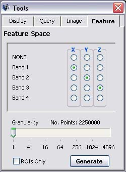
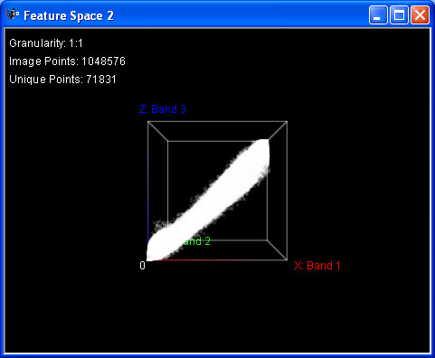

Feature Space
Generating a Feature Space
Parbat3D can generate a Feature Space, or 3D scatter plot, from data
contained within the points of an image. To create a Feature Space
based on the currently loaded image, follow these steps:
- An image must first be loaded. See loading an image
- If the Tools Window is not visible, click on the 'Window'
menu followed by 'Tools'.

- Click on the 'Feature' tab in the Tools Window.

- Select which image bands you want to display as the X, Y
and Z variables on the scatter plot.
- Change the granuality setting if required. Increasing the
granuality will reduce the number of points generated and therfore
decrease the loading time. It is recommended to start with a high
granuality setting when generating a feature space from large images.
- If you wish to only display the points
within the currently visible ROIs, tick the 'ROIs Only' box. Leaving the 'ROIs Only' box unticked will display every point within the image.
- If you wish to highlight certain ROIs in the feature space, make sure that those ROIs are currently
visible. If you do not wish to highlight certain ROIs, set them to be invisible. For information on how to
hide and show ROIs, please see Regions Of Interest.
- Click the 'Generate' button.
Depending on the size of the image and the settings you have choosen,
there may be a slight delay while the feature space is generated. Once
the feature space has been created, it will appear in a new window,
similar to the one shown below.

Parbat3D allows you to have multiple feature space windows open at the
same time. If you wish to change the settings on the feature space tab,
they will not have any effect on any of the existing feature space
windows and will only apply to a new feature space window that you can
create by clicking on the 'Generate' button.
Navigating a Feature Space
Panning:
- Press and hold the left and right mouse buttons at the same time,
move the mouse in the direction you want to pan, then release both
mouse buttons.
- Press the up, down, left or right arrows on the keyboard.
Rotating:
- Press and hold the left mouse button within the feature
space, move the mouse in the direction you want to rotate, then release the left mouse button.
- Hold down Ctrl while pressing the up, down, left or right arrows on the keyboard.
Zooming In/Out:
- Press and hold the right mouse button within the feature
space, move the mouse forward/back, then release the right mouse button.
- Press Page Up or Page Down on the keyboard.